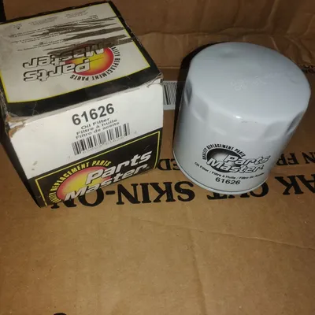
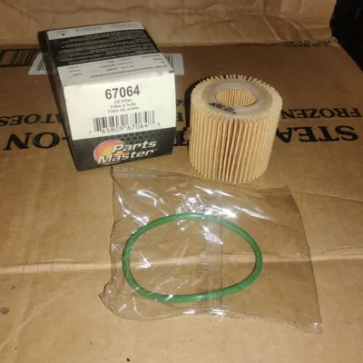
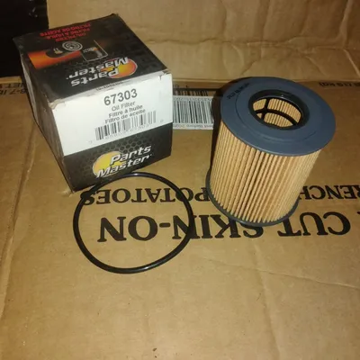
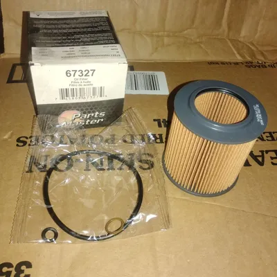

Transmission Filter
31728-AA050 Subaru Transmission Filter 99-05 Forester Legacy Impreza Outback
31728AA050
Fits 2003-2006 Subaru Baja · 1999-2004 Subaru Forester (82 listed)
$14.99
View details43 parts in Oil Filters from WIX, Parts Master and Bosch and more, each with photos, part numbers and condition on its own page. Open a part to see every vehicle it is listed for.
43 parts
Online checkout through Square. Ships from Carbondale, PA, or pick up by confirmed appointment only. Fitment question? Message us.
31728AA050
Fits 2003-2006 Subaru Baja · 1999-2004 Subaru Forester (82 listed)
$14.99
View details
TF-185
Fits 1969-1977 Ford Bronco · 1970-1974 Ford Country Squire (823 listed)
$49.99
View details
3300
Fits 1994-1997 Ford Aspire · 1994-2002 Ford Escort (91 listed)
$11.99
View details
3422
Fits 2007-2010 Ford Edge · 2009-2010 Ford Flex (22 listed)
$11.99
View details
COS9715
Fits 2005-2010 Subaru Forester · 2008-2012 Subaru Impreza (88 listed)
$11.99
View details
XL2Z7A098DA
Fits 1999-2001 Ford Explorer · 2001-2003 Ford Explorer Sport (430 listed)
$27.99
View details
CH8481
Fits 2001-2005 Mercedes-Benz C240 · 2001-2005 Mercedes-Benz C320 (44 listed)
$14.99
View details
CH9584
Fits 2003-2008 Mini Cooper (37 listed)
$11.99
View details
61223
Fits 2001-2006 BMW 325i · 2001-2006 BMW 330i (29 listed)
$12.99
View details
61226
Fits 2004-2008 Chrysler Crossfire · 2007-2008 Mercedes-Benz CLK280 (21 listed)
$12.99
View details
61315
Fits 1998-2000 Ford Contour · 1998-2003 Ford Escort (46 listed)
$11.99
View details
61356
Fits 2013-2016 Acura ILX · 2003-2016 Acura MDX (46 listed)
$11.99
View details
61393
Fits 1988-1990 Audi 80 · 1998-2005 Volkswagen Beetle (298 listed)
$11.99
View details
61626
Fits 1985-1990 Jeep Cherokee · 1987-1990 Jeep Wrangler (133 listed)
$11.99
View details
67002
Fits 2012-2023 Mazda 3 · 2017-2018 Mazda 6 (443 listed)
$11.99
View details
67021
Fits 2000-2004 Volvo C70 · 2004-2007 Volvo S60 (20 listed)
$11.99
View details
67041
Fits 2008-2014 Lexus IS F · 2008-2015 Lexus LX570 (228 listed)
$11.99
View details
67061
Fits 2006-2009 Hyundai Azera · 2009-2016 Hyundai Genesis (51 listed)
$11.99
View details
67064
Fits 2010-2017 Toyota Camry · 2009-2010 Pontiac Vibe (144 listed)
$11.99
View details
67078
Fits 2005-2006 Chrysler Crossfire · 2007-2009 Dodge Sprinter 2500 (38 listed)
$11.99
View details
67090
Fits 2013-2015 Cadillac ATS · 2004-2015 Cadillac CTS (174 listed)
$11.99
View details
67303
Fits 2003-2008 Mini Cooper (37 listed)
$11.99
View details
67312
Fits 2003-2005 Ford Excursion · 2003-2010 Ford F-250 Super Duty (403 listed)
$27.99
View details
67327
Fits 2014-2016 BMW M235i · 2015-2016 BMW M3 (66 listed)
$12.99
View details
S6607
Fits 2005-2010 Subaru Forester · 2008-2012 Subaru Impreza (76 listed)
$10.99
View details
51034
Fits 1975 Chevrolet LUV · 1978-1980 Ford Fiesta (251 listed)
$12.99
View details
51045
Fits 1977-1992 Cadillac DeVille · 1977-1992 Cadillac Eldorado (10 listed)
$15.99
View details
51088
Fits 1986-1988 BMW 325 · 1985-1993 Mercedes-Benz 190E (16 listed)
$12.99
View details
51143
Fits 1958-1964 Chevrolet Bel Air · 1958-1964 Chevrolet Biscayne (440 listed)
$13.99
View details
51311
Fits 1992-1999 Kubota · 1992-1999 Mahindra (8 listed)
$15.99
View details
51334ST
Fits 1997-2002 Acura CL · 1998-2000 Acura EL (149 listed)
$10.99
View details
51335
Fits 1968-1975 Lotus Europa · 1983-1984 Renault Alliance (22 listed)
$17.98
View details
51342
Fits 1993-1996 Volkswagen Golf · 1993-1996 Volkswagen Jetta (4 listed)
$12.99
View details
51347
Fits 1972-1982 Ford Courier · 1975-1979 Ford Pinto (121 listed)
$12.99
View details
51356
Fits 1993-1997 Ford Probe · 1999-2000 Mercury Villager (4 listed)
$15.99
View details
51361
Fits 1993-1997 INFINITI J30 · 1990-1992 INFINITI M30 (49 listed)
$15.99
View details
51372
Fits 1991-2017 Ford · 1991-2017 Lincoln (8 listed)
$17.98
View details
51392
Fits 1986-1987 Acura Integra · 1979-1983 Honda Accord (99 listed)
$15.99
View details
51522
Fits 2006-2011 Buick Lucerne · 2004-2007 Buick Rainier (28 listed)
$15.99
View details
51626
Fits 1990-1992 Dodge Monaco · 1988-1989 Eagle Medallion (207 listed)
$15.99
View details
51630
Fits 1988-1992 Buick Century · 1987-1991 Buick Skylark (469 listed)
$15.99
View details
51742
Fits 1983-1994 Ford E-350 Econoline · 1983-1994 Ford F-250 (346 listed)
$34.99
View details
57302
Fits 2003-2005 Ford Thunderbird · 2009-2010 Jaguar XF (51 listed)
$11.99
View details